%%{init: {'theme': 'base', 'themeVariables': {'background': '#FFFFFF', 'primaryColor': '#FFFFFF', 'primaryBorderColor': '#E5E5EA', 'primaryTextColor': '#1D1D1F', 'lineColor': '#86868B', 'secondaryColor': '#F5F5F7', 'tertiaryColor': '#FFFFFF', 'mainBkg': '#FFFFFF', 'nodeBorder': '#E5E5EA', 'clusterBkg': '#F5F5F7', 'clusterBorder': '#E5E5EA', 'titleColor': '#1D1D1F', 'edgeLabelBackground': '#FFFFFF'}}}%%
flowchart LR
A[Bisher: CPU macht alles] -->|Flaschenhals| B[CPU überlastet]
C[Heute: Arbeitsteilung] -->|CPU rechnet| D[DMA schaufelt]
style C fill:#FFFFFF,stroke:#E2001A,stroke-width:2px !important
06 · Hardware-Beschleunigung (DMA)
Mikrocomputertechnik 3 · Direct Memory Access — die CPU vom Daten-Schaufeln befreien
Prof. Dr.-Ing. Daniel Klünder
Willkommen zu Block 6!
- Willkommen zur sechsten Vorlesung in Mikrocomputertechnik 3
- Bisher: Denken (Speicher/Caches), Reagieren (Interrupts), Handeln (PWM), Sprechen (Busse)
- Heute: Effizienz — den größten Stau im Datenpfad auflösen
- Ziel: stupide Fleißarbeit von der CPU auf Hardware-Assistenten verlagern
Einordnung im Semester
Anknüpfung: I2C-Labor
Kurz-Recap aus Block 5 (Vertiefung im Übungsblatt):
- IMU per I2C: Start, Adresse, R/W, ACK/NACK, Stop
- High/Low-Byte per Shift zu 16-Bit-Werten
- CPU wartete oft auf die I2C-Hardware (
wait_for_ack/ Polling)
Schnelle Schnittstellen, langsames Füttern
- Big 3 beherrscht: UART, SPI, I2C
- Externe Geräte anschließbar
- SPI für Displays oft mit SCK im Zehner-MHz-Bereich
- Ein Bit je Takt: 10 MHz ergeben höchstens 1,25 MB/s, 50 MHz höchstens 6,25 MB/s
- DMA verkürzt Nachfüllpausen. Die Leitung wird dadurch nicht schneller
Das Problem: Datenmenge
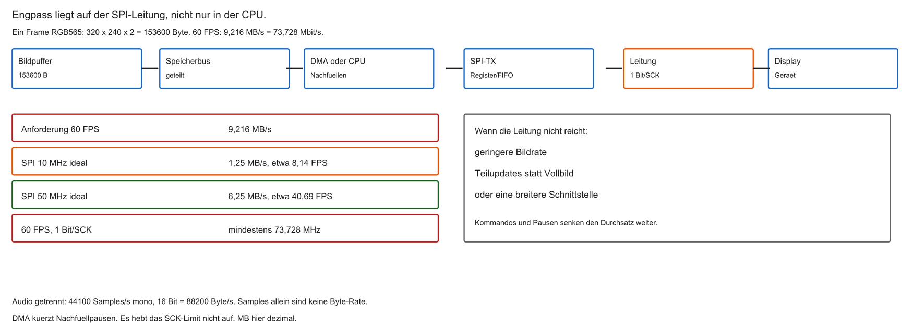
- Temperaturfühler: wenige Bytes/s — unkritisch
- Audio braucht Kanalzahl und Samplebreite: mono, 16 Bit, 44100 Samples/s sind 88200 Byte/s
- TFT \(320\times 240\), RGB565, 60 FPS:
\[ 320 \times 240 \times 2 \times 60 = 9\,216\,000\ \mathrm{Bytes/s} \]
- CPU müsste millionenfach RAM lesen und SPI-Register füllen
Refresher: Wie die CPU kopiert
- MCT1: Speicherzugriff über Load/Store
lw: RAM → Register;sw: Register → MMIO (z. B. SPI-TX)- Kein „direkt von RAM nach SPI“ in einem Befehl
Agenda
- CPU-Flaschenhals: Polling und Interrupt-Stürme
- DMA: Bypass der CPU und Bus-Mastering
- Kanäle und Konfiguration (Source, Destination, Increment)
- Burst, Ringpuffer, Double Buffering
- Labor-Ausblick (Renode)
Lernziele Block 6
- Begründen, warum Polling und häufige ISRs den Prozessor auslasten
- Bus-Mastering und Arbitration im SoC erklären
- DMA-Kanal: Source, Destination, Increment Mode
- Cache-Kohärenz bei DMA einordnen
- Ringpuffer und Double Buffering (Ping-Pong) für Streams erklären
Die Leitfrage des Tages
- 1 MB Array im SRAM (z. B. Bild) → SPI → Display
- Parallel: CPU führt schwere Berechnung aus (z. B. Edge-AI)
- Wie fließen die Bytes RAM → Peripherie, ohne die CPU-Rechnung zu stoppen?
%%{init: {'theme': 'base', 'themeVariables': {'background': '#FFFFFF', 'primaryColor': '#FFFFFF', 'primaryBorderColor': '#E5E5EA', 'primaryTextColor': '#1D1D1F', 'lineColor': '#86868B', 'secondaryColor': '#F5F5F7', 'tertiaryColor': '#FFFFFF', 'mainBkg': '#FFFFFF', 'nodeBorder': '#E5E5EA', 'clusterBkg': '#F5F5F7', 'clusterBorder': '#E5E5EA', 'titleColor': '#1D1D1F', 'edgeLabelBackground': '#FFFFFF'}}}%%
flowchart LR
RAM[(SRAM)] -.->|Tunnel?| SPI[SPI]
CPU[CPU] -->|weiterrechnen| KI[Berechnung]
style SPI fill:#FFFFFF,stroke:#E2001A,stroke-width:2px !important
Aufgabe — 60 FPS
Warum liefert DMA bei 50-MHz-SPI mit einem Bit je Takt kein RGB565-Vollbild mit 60 FPS?
Methode 1: Polling
- Warten, bis TX leer — dann nächstes Byte
- Funktioniert korrekt — blockiert die CPU
Die Polling-Falle
- Beispiel: SPI mit \(10\,\mathrm{MHz}\)-SCK → grob \(\approx 0{,}8\,\mu\mathrm{s}\) pro Byte (8 Bit + Overhead je nach Mode)
- \(10^{6}\) Bytes \(\Rightarrow\) Größenordnung \(\approx 0{,}8\,\mathrm{s}\) Transferzeit
- Die aufrufende Schleife bleibt beschäftigt. Aktivierte Interrupts können weiterlaufen
- \(10^{6}\) Byte bei 10 MHz: mindestens 0,8 s reine Leitungszeit, ohne Zusatzpausen
Methode 2: Interrupt-Versand
- SPI löst bei TX-leer Interrupt aus (über PLIC)
- ISR schreibt ein Byte; CPU rechnet dazwischen weiter
Interrupt-Overhead
Pro Interrupt typisch:
- Kontext sichern. Ein universelles Leeren der Pipeline gibt es nicht
mepc/mcausesetzen- Register retten (Stack)
- Nutzarbeit: ein Byte kopieren
- Register wiederherstellen,
mret
Oft Dutzende Takte Overhead für wenige Nutz-Takte.
Interrupt Storm
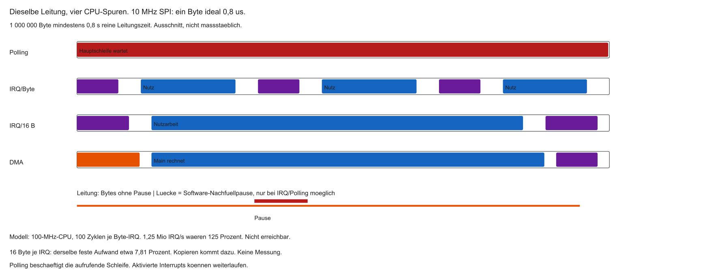
- SPI meldet „leer“ im Sub-µs- bis µs-Takt
- Millionen ISRs/s möglich
- CPU: Zeit geht in Push/Pop statt Nutzarbeit
| Phase | Was passiert |
|---|---|
| kurz | KI/Main |
| lang | ISR-Overhead |
| kurz | KI/Main |
| lang | ISR-Overhead |
CPU als Postbote
- Polling und ISR: jedes Byte durch CPU-Register
- Pfad: RAM → Bus → (Cache) → Register → Bus → SPI
- ALU/Pipeline involviert, obwohl nur 1:1 kopiert wird
Bus-Engstelle beim Software-Kopieren
- Auch mit getrennten L1-I/D-Caches teilen sich CPU und Peripherie oft den Systembus zum Hauptspeicher
- Intensives
lw/sw-Kopieren belegt diesen Pfad - Instruction-Fetch und Nutzarbeit konkurrieren → Pipeline stottert
Lösung: Hardware-Assistent
- CPU = Manager (rechnen, entscheiden)
- Auftrag: Quelle, Ziel, Länge — dann weiterarbeiten
- Assistent schaufelt und meldet „fertig“
- Name: Direct Memory Access (DMA) / DMAC
Fragen? — Flaschenhals
- Warum Interrupt-Sturm bei schnellem SPI?
- Warum verschwenden
lw/sw-Schleifen ALU/Bus? - „Postboten“-Problem klar?
Was ist DMA?
- DMA: Direct Memory Access — direkter Speicherzugriff
- Peripherie (SPI, UART, ADC, …) liest/schreibt RAM ohne CPU-Kopierschleife
- Steuerung: DMA-Controller (DMAC) als dediziertes Subsystem
Bypass der CPU
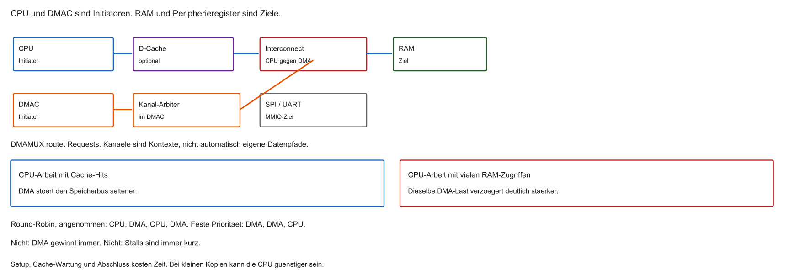
- Ohne DMA: RAM → CPU → UART/SPI
- Mit DMA: RAM → DMAC → Peripherie
- Der Kopierpfad läuft am Registerfile vorbei. Setup, Cache und Abschluss bleiben
- Buskonflikte können die CPU trotzdem verzögern
%%{init: {'theme': 'base', 'themeVariables': {'background': '#FFFFFF', 'primaryColor': '#FFFFFF', 'primaryBorderColor': '#E5E5EA', 'primaryTextColor': '#1D1D1F', 'lineColor': '#86868B', 'secondaryColor': '#F5F5F7', 'tertiaryColor': '#FFFFFF', 'mainBkg': '#FFFFFF', 'nodeBorder': '#E5E5EA', 'clusterBkg': '#F5F5F7', 'clusterBorder': '#E5E5EA', 'titleColor': '#1D1D1F', 'edgeLabelBackground': '#FFFFFF'}}}%%
flowchart TD
RAM[(SRAM)] <--> DMAC[DMA-Controller]
DMAC <--> SPI[SPI]
CPU[CPU] -.->|Auftrag| DMAC
style DMAC fill:#FFFFFF,stroke:#E2001A,stroke-width:2px !important
Der DMA-Controller (DMAC)
- Eigenes Silizium-Modul auf dem SoC
- Keine allgemeine ALU — spezialisiert auf Adressen und Transfers
- Merkt sich u. a. Quelle, Ziel, Restlänge
- Oft mehrere Controller/Kanäle (DMA1, DMA2, …)
Kampf um den Bus
- Oft ein gemeinsamer Pfad zum RAM
- Früher: CPU alleiniger Nutzer
- DMA will denselben Bus — Konfliktregelung nötig
Bus-Mastering
- Bus-Master: darf selbst Transaktionen starten
- CPU: Bus-Master
- DMAC: ebenfalls Bus-Master
- UART/SPI-Datenregister typisch: Slave (passiv)
Bus-Arbitration
- Bus-Matrix / Arbiter steuert den Zugang
- Gleichzeitiger Zugriff CPU und DMA → Priorität entscheidet
- Priorität ist eine Politik, kein Naturgesetz. Round-Robin und feste Priorität unterscheiden
- „DMA gewinnt immer“ und „Stalls sind immer kurz“ gelten nicht allgemein
%%{init: {'theme': 'base', 'themeVariables': {'background': '#FFFFFF', 'primaryColor': '#FFFFFF', 'primaryBorderColor': '#E5E5EA', 'primaryTextColor': '#1D1D1F', 'lineColor': '#86868B', 'secondaryColor': '#F5F5F7', 'tertiaryColor': '#FFFFFF', 'mainBkg': '#FFFFFF', 'nodeBorder': '#E5E5EA', 'clusterBkg': '#F5F5F7', 'clusterBorder': '#E5E5EA', 'titleColor': '#1D1D1F', 'edgeLabelBackground': '#FFFFFF'}}}%%
flowchart LR
CPU[CPU] --> A{Arbiter}
DMA[DMA] --> A
A --> RAM[(SRAM)]
style A fill:#FFFFFF,stroke:#E2001A,stroke-width:2px !important
Cycle Stealing
- DMA „klaut“ gelegentlich Bus-Zyklen
- Kein ISR-Overhead pro Byte → Störung oft gering
- Mit L1-Cache rechnet die CPU oft ohne Dauerzugriff auf den Hauptspeicherbus
Transparent vs. Blocking
- Transparent: DMA nutzt Bus, wenn die CPU ihn ohnehin nicht braucht
- Blocking / Burst: DMA belegt den Bus länger — CPU stottert kurz
- Immer noch weit günstiger als C-Kopierschleifen
Hardware-Handshake
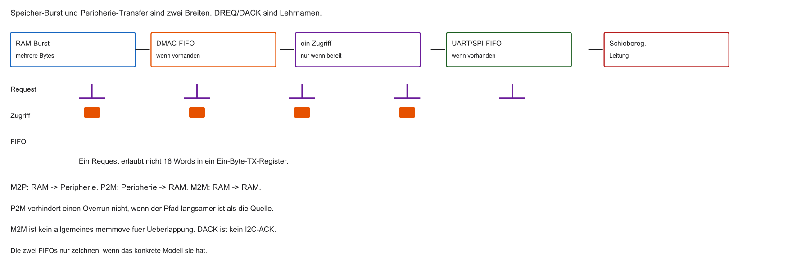
- DMA darf Peripherie nicht überfluten
- Synchronisation über dedizierte Signale im SoC (ohne CPU)
Request / Acknowledge (Handshake)
- Request (klassisch oft DREQ): Peripherie „Register leer / bereit“
- DMAC: Transfer RAM → Peripherie
- Acknowledge (klassisch oft DACK): „geliefert“
- Signale und Namen sind herstellerspezifisch — das Prinzip bleibt gleich
%%{init: {'theme': 'base', 'themeVariables': {'background': '#FFFFFF', 'primaryColor': '#FFFFFF', 'primaryBorderColor': '#E5E5EA', 'primaryTextColor': '#1D1D1F', 'lineColor': '#86868B', 'secondaryColor': '#F5F5F7', 'tertiaryColor': '#FFFFFF', 'mainBkg': '#FFFFFF', 'nodeBorder': '#E5E5EA', 'clusterBkg': '#F5F5F7', 'clusterBorder': '#E5E5EA', 'titleColor': '#1D1D1F', 'edgeLabelBackground': '#FFFFFF'}}}%%
flowchart LR
SPI -->|DREQ| DMAC
DMAC -->|Daten| SPI
DMAC -->|DACK| SPI
style DMAC fill:#FFFFFF,stroke:#E2001A,stroke-width:2px !important
Richtung: Memory → Peripheral
- SRAM → UART / SPI / I2C / DAC
- Quelle: Array (Adresse steigt); Ziel: festes Datenregister
- Typisch: Audio-Out, Display-Refresh
Richtung: Peripheral → Memory
- UART / SPI / ADC → SRAM
- B. ADC sampelt Mikrofon mit hoher Rate → DREQ → DMA füllt Puffer
- CPU wertet später aus (Spracherkennung etc.)
Richtung: Memory → Memory
- SRAM-Array A → Array B
- Ersetzt/beschleunigt
memcpy-artige Kopien - Oft ohne externes DREQ — so schnell der Bus erlaubt
DMA-Interrupts
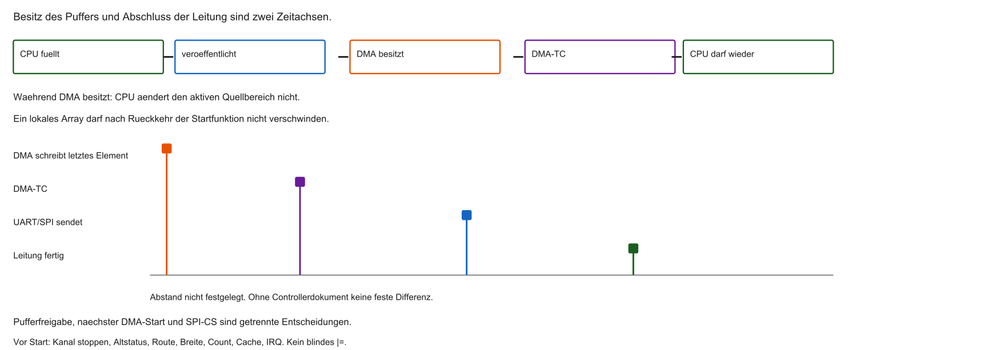
- Anbindung an PLIC / Interrupt-System
- Typisch: Transfer Complete (TC), Half Transfer (HT), Transfer Error (TE)
- Ein Interrupt nach \(N\) Bytes statt \(N\) Interrupts
Fragen? — DMA-Grundlagen
- Was bedeutet Bus-Mastering?
- Wie schlichtet der Arbiter (Cycle Stealing)?
- Rolle des Hardware-Handshakes (Request/Acknowledge)?
DMA-Kanäle (Channels / Streams)
- Viele Peripherien wollen parallel Daten bewegen (UART, SPI, I2C, …)
- Ein DMAC hat daher mehrere Kanäle (z. B. Channel 0–7)
- Jeder Kanal: eigene Quelle, Ziel, Länge, Priorität
- Interner DMA-Arbiter: bei gleichzeitigen DREQs entscheidet die Kanalpriorität
%%{init: {'theme': 'base', 'themeVariables': {'background': '#FFFFFF', 'primaryColor': '#FFFFFF', 'primaryBorderColor': '#E5E5EA', 'primaryTextColor': '#1D1D1F', 'lineColor': '#86868B', 'secondaryColor': '#F5F5F7', 'tertiaryColor': '#FFFFFF', 'mainBkg': '#FFFFFF', 'nodeBorder': '#E5E5EA', 'clusterBkg': '#F5F5F7', 'clusterBorder': '#E5E5EA', 'titleColor': '#1D1D1F', 'edgeLabelBackground': '#FFFFFF'}}}%%
flowchart LR
SPI -->|DREQ| CH1[Kanal 1]
UART -->|DREQ| CH2[Kanal 2]
I2C -->|DREQ| CH3[Kanal 3]
CH1 --> A{DMA-Arbiter}
CH2 --> A
CH3 --> A
A --> Bus[Systembus]
style A fill:#FFFFFF,stroke:#E2001A,stroke-width:2px !important
Multiplexing der Kanäle (DMAMUX)
- Oft mehr Peripherien als DMA-Kanäle
- Lösung: Multiplexer-Matrix (häufig DMAMUX) vor dem DMAC
- Software verbindet z. B.
UART_TX-Request mit Kanal 3 - Doppelbelegung desselben Kanals → undokumentiertes / fehlerhaftes Verhalten
- Referenzhandbuch: Request-Tabellen sind Pflichtlektüre
MMIO-Register eines Kanals
- Steuerung über Memory-Mapped Register
- In C oft als
structabgebildet - Vier Kernfragen: Woher? Wohin? Wie viel? Welche Breite / Modi?
typedef struct {
volatile uint32_t SRC_ADDR; /* Quelle */
volatile uint32_t DST_ADDR; /* Ziel */
volatile uint32_t COUNT; /* Anzahl */
volatile uint32_t CONTROL; /* Breite, Enable, … */
} DMA_Channel_TypeDef;
/* fiktiv — Labor: Datenblatt / Renode */
#define DMA_CH1 ((DMA_Channel_TypeDef *)0x40020000u)Parameter 1: Source Address (SRC)
- Physikalische Startadresse der Quelle in
SRC_ADDR - Senden: oft Adresse eines Arrays im SRAM
- DMA liest von dort (ggf. mit Auto-Inkrement)
Parameter 2: Destination Address (DST)
- Zieladresse in
DST_ADDR - Senden über SPI/UART: Adresse des Datenregisters (z. B. TX_DATA)
- DMA schreibt blind auf diese Adresse
Parameter 3: Transfer Count
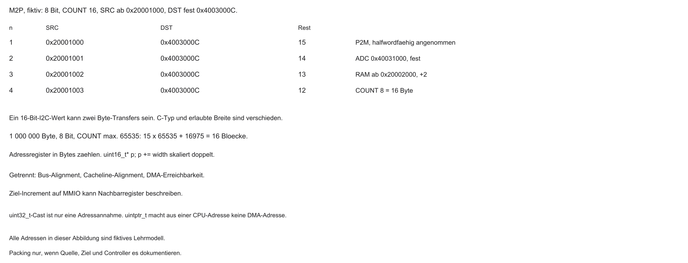
COUNTzählt Transferelemente, nicht automatisch Bytes- Beispiel: höchstens 65535 Elemente. 1000000 Byte zu 8 Bit brauchen 16 Blöcke: fünfzehnmal 65535 plus 16975
- Nach erfolgreichem Transfer: Hardware dekrementiert automatisch
- Bei
COUNT = 0: Kanal stoppt, typisch Transfer-Complete-Interrupt
%%{init: {'theme': 'base', 'themeVariables': {'background': '#FFFFFF', 'primaryColor': '#FFFFFF', 'primaryBorderColor': '#E5E5EA', 'primaryTextColor': '#1D1D1F', 'lineColor': '#86868B', 'secondaryColor': '#F5F5F7', 'tertiaryColor': '#FFFFFF', 'mainBkg': '#FFFFFF', 'nodeBorder': '#E5E5EA', 'clusterBkg': '#F5F5F7', 'clusterBorder': '#E5E5EA', 'titleColor': '#1D1D1F', 'edgeLabelBackground': '#FFFFFF'}}}%%
flowchart LR
A[COUNT = 1000] --> B[Transfer]
B --> C[COUNT = 999]
C --> D[COUNT = 0]
D -->|STOP| E[IRQ an CPU]
style E fill:#FFFFFF,stroke:#E2001A,stroke-width:2px !important
Parameter 4: Data Width
- Pro Transfer: 8, 16 oder 32 Bit — nur wenn Quelle, Ziel und DMA-Pfad das erlauben
- Ein
uint16_tim C-Programm rechtfertigt keinen Halfword-Zugriff auf ein Byte-Register
| C-Typ | DMA-Breite | Transfers für 32 Bit Nutzdaten |
|---|---|---|
uint8_t |
Byte (8) | 4 |
uint16_t |
Halfword (16) | 2 |
uint32_t |
Word (32) | 1 (oft maximal effizient) |
Address Increment Mode
- Arrays: Pointer muss wandern — sonst 1000× dieselbe Adresse
- INC: nach jedem Transfer \(+\) Data-Width auf SRC und/oder DST
- Hardware-Äquivalent zu
pointer++ - Quelle und Ziel getrennt schaltbar
Memory → Peripheral: Pointer
- Source Increment: an (Array durchlaufen)
- Destination Increment: aus (festes TX-Register)
- Ziel inkrementieren → Schreiben neben das Register → oft Bus Fault
%%{init: {'theme': 'base', 'themeVariables': {'background': '#FFFFFF', 'primaryColor': '#FFFFFF', 'primaryBorderColor': '#E5E5EA', 'primaryTextColor': '#1D1D1F', 'lineColor': '#86868B', 'secondaryColor': '#F5F5F7', 'tertiaryColor': '#FFFFFF', 'mainBkg': '#FFFFFF', 'nodeBorder': '#E5E5EA', 'clusterBkg': '#F5F5F7', 'clusterBorder': '#E5E5EA', 'titleColor': '#1D1D1F', 'edgeLabelBackground': '#FFFFFF'}}}%%
flowchart LR
A[SRAM++] -->|INC an| B[UART_TX fest]
style B fill:#FFFFFF,stroke:#E2001A,stroke-width:2px !important
Peripheral → Memory: Pointer
- Source Increment: aus (festes ADC-/RX-Register)
- Destination Increment: an (Werte im Array ablegen)
%%{init: {'theme': 'base', 'themeVariables': {'background': '#FFFFFF', 'primaryColor': '#FFFFFF', 'primaryBorderColor': '#E5E5EA', 'primaryTextColor': '#1D1D1F', 'lineColor': '#86868B', 'secondaryColor': '#F5F5F7', 'tertiaryColor': '#FFFFFF', 'mainBkg': '#FFFFFF', 'nodeBorder': '#E5E5EA', 'clusterBkg': '#F5F5F7', 'clusterBorder': '#E5E5EA', 'titleColor': '#1D1D1F', 'edgeLabelBackground': '#FFFFFF'}}}%%
flowchart LR
B[ADC_DATA fest] -->|INC an| A[SRAM++]
style B fill:#FFFFFF,stroke:#E2001A,stroke-width:2px !important
Memory Alignment
- Word-Transfers (32 Bit): Startadressen typisch 4-Byte-aligned
- Unaligned (z. B.
0x20000001) → oft Bus Error / Transfer Error - In C Alignment erzwingen:
Cache-Kohärenz und DMA
- Relevant, sobald ein Data-Cache (Write-Back) vorhanden ist — viele einfache MCUs haben keinen
- Erinnerung Block 2: L1-D-Cache puffert RAM-Inhalte
- DMA sieht den CPU-D-Cache typischerweise nicht — Zugriff auf den physischen Speicher
- CPU und DMA können unterschiedliche Sicht auf dieselben Adressen haben
%%{init: {'theme': 'base', 'themeVariables': {'background': '#FFFFFF', 'primaryColor': '#FFFFFF', 'primaryBorderColor': '#E5E5EA', 'primaryTextColor': '#1D1D1F', 'lineColor': '#86868B', 'secondaryColor': '#F5F5F7', 'tertiaryColor': '#FFFFFF', 'mainBkg': '#FFFFFF', 'nodeBorder': '#E5E5EA', 'clusterBkg': '#F5F5F7', 'clusterBorder': '#E5E5EA', 'titleColor': '#1D1D1F', 'edgeLabelBackground': '#FFFFFF'}}}%%
flowchart TD
CPU[CPU] <--> Cache[L1 Cache]
Cache -.->|Write-Back verzögert| RAM[(SRAM)]
DMAC[DMA] <-->|liest/schreibt RAM| RAM
style Cache fill:#FFFFFF,stroke:#E2001A,stroke-width:2px !important
Stale Data (beide Richtungen)
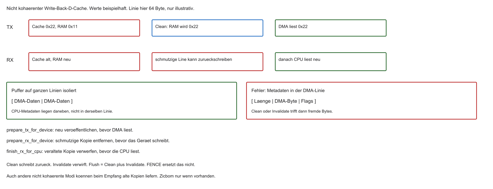
- Senden (CPU → DMA): frische Daten nur im Cache → DMA sendet alte RAM-Inhalte
- Empfangen (DMA → CPU): frische Daten im RAM → CPU trifft veralteten Cache-Hit
- TX: Daten vor dem DMA-Start veröffentlichen. RX: Bereich vor der Übergabe vorbereiten und nach Abschluss synchronisieren
- Nur „danach invalidieren“ schützt nicht vor einer schmutzigen Zeile, die später zurückschreibt
Cache Clean / Invalidate
- Clean (Flush): vor DMA-Sendestart schmutzige Lines des Puffers in den RAM schreiben
- Invalidate: vor CPU-Lesen empfangener DMA-Daten Lines verwerfen → nächster Read geht zum RAM
- API ist plattformabhängig (ARM: Cache-Maintenance; RISC-V: Fence ordnet Zugriffe; für Cache-Kohärenz ggf. Zicbom —
cbo.clean/cbo.inval)
Uncached DMA-Zonen
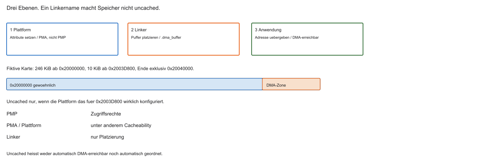
- Alternative nur, wenn die Plattform einen nicht gecachten Bereich bereitstellt
- Standard-RISC-V-PMP regelt Zugriffsrechte, nicht Cacheability. Dafür sind PMAs oder die Plattform zuständig
- Der Linker legt
.dma_bufferin einen Bereich, dessen Attribute schon gelten - Uncached ist nicht automatisch DMA-erreichbar und nicht die einzige professionelle Lösung
Aufgabe — Adresse und Linker
Welche Adresse bleibt beim UART-TX fest? Macht der Name RAM_UNCACHED den Bereich uncached?
Single-Transfer vs. Burst
- Single: ein DREQ → typisch ein Read + ein Write; Bus danach wieder frei
- Burst: nach einem Request ein Block (z. B. 16 Words) am Stück
- Burst: höherer Durchsatz, kurz härtere Busbelegung für die CPU
Warum Burst-Transfers?
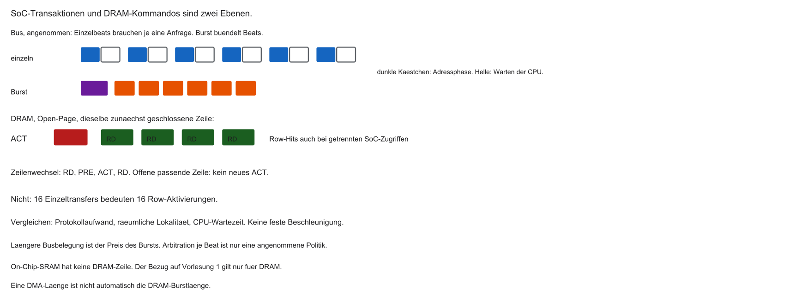
- On-Chip-SRAM: Burst spart vor allem wiederholte Bus-Arbitration
- Externes DRAM (Block 1): Zeile öffnen kostet; offene Zeile → schnelle Column-Zugriffe
- Eine offene Zeile kann mehrere Reads bedienen, auch bei getrennten SoC-Zugriffen
- Ein Zeilenwechsel braucht PRE und ACT. SRAM hat diese Zeilenlogik nicht
| Modus | Typischer Nachteil Single | Vorteil Burst |
|---|---|---|
| On-Chip-SRAM | 16× Arbitration | 1× Arbitration, hoher Durchsatz |
| DRAM | Zeile kann schon offen sein | Row-Hits hängen von Abbildung und Politik ab |
FIFOs im DMAC
- Problem: Burst holt schnell aus dem RAM; SPI/UART sind langsamer
- Viele DMACs: interner FIFO als Zwischenpuffer
- Burst → FIFO füllen → Bus freigeben → Peripherie per DREQ aus dem FIFO füttern
%%{init: {'theme': 'base', 'themeVariables': {'background': '#FFFFFF', 'primaryColor': '#FFFFFF', 'primaryBorderColor': '#E5E5EA', 'primaryTextColor': '#1D1D1F', 'lineColor': '#86868B', 'secondaryColor': '#F5F5F7', 'tertiaryColor': '#FFFFFF', 'mainBkg': '#FFFFFF', 'nodeBorder': '#E5E5EA', 'clusterBkg': '#F5F5F7', 'clusterBorder': '#E5E5EA', 'titleColor': '#1D1D1F', 'edgeLabelBackground': '#FFFFFF'}}}%%
flowchart LR
RAM[(SRAM)] -->|Burst| FIFO[DMA-FIFO]
FIFO -->|DREQ-getaktet| SPI[SPI]
style FIFO fill:#FFFFFF,stroke:#E2001A,stroke-width:2px !important
Problem endloser Streams
- Audio-DAC: z. B. \(\approx 44\,100\) Samples/s, lange Dauer
- RAM fasst nicht die ganze Datei
- Kleiner Puffer:
COUNT = 0→ Sound bricht ab - Ständiges Stoppen/Neustarten in Software → Glitches
Circular Mode (Ringpuffer)
- Array fester Größe als Ring (z. B. 4 KiB)
- Bei
COUNT = 0: Pointer und Zähler werden in Hardware neu geladen (Wrap) - DMA rotiert, bis Software den Kanal stoppt
Ringpuffer: Software-Pflicht
- DMA-Lesezeiger läuft im Kreis
- CPU muss den gerade verlassenen Bereich nachfüllen (z. B. aus Flash/Netz)
- Zu langsam → alte Daten → Stottern (Buffer Underrun)
%%{init: {'theme': 'base', 'themeVariables': {'background': '#FFFFFF', 'primaryColor': '#FFFFFF', 'primaryBorderColor': '#E5E5EA', 'primaryTextColor': '#1D1D1F', 'lineColor': '#86868B', 'secondaryColor': '#F5F5F7', 'tertiaryColor': '#FFFFFF', 'mainBkg': '#FFFFFF', 'nodeBorder': '#E5E5EA', 'clusterBkg': '#F5F5F7', 'clusterBorder': '#E5E5EA', 'titleColor': '#1D1D1F', 'edgeLabelBackground': '#FFFFFF'}}}%%
flowchart LR
CPU[CPU schreibt] --> R((Ringpuffer))
R --> DMA[DMA liest]
DMA -->|Wrap| R
style R fill:#FFFFFF,stroke:#E2001A,stroke-width:2px !important
Double Buffering (Ping-Pong)
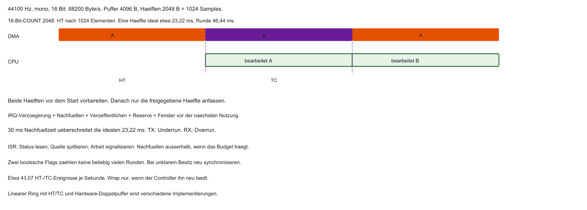
- Ring in zwei Hälften A und B
- DMA liest A → CPU füllt parallel B (und umgekehrt)
- Kein Konflikt: getrennte Bereiche
Ping-Pong: Interrupt-Logik
- Mitte erreicht → Signal: Hälfte A fertig → CPU füllt A nach
- Ende erreicht → Signal: Hälfte B fertig → Wrap, CPU füllt B nach
- Endlos mit klarer Phasengrenze
Half-Transfer-Interrupt (HT)
- Bei vielen Controllern: HT bei exakt 50 % von
COUNT→ erste Hälfte nachfüllen - TC (
COUNT = 0): zweite Hälfte nachfüllen (bei Circular: Wrap) - Ein Array + zwei Flags in der ISR (Namen/Bits herstellerspezifisch)
volatile unsigned ht_count, tc_count;
void dma_isr(void) {
if (STATUS_REG & HALF_TRANSFER_FLAG) {
clear_ht(); /* Semantik laut Controller, bei W1C kein RMW */
ht_count++;
}
if (STATUS_REG & TRANSFER_COMPLETE_FLAG) {
clear_tc();
tc_count++;
}
}
/* Nachfüllen im Worker, nicht als lange Arbeit in der ISR */Ausblick: DMA2D (2D-Kopie)
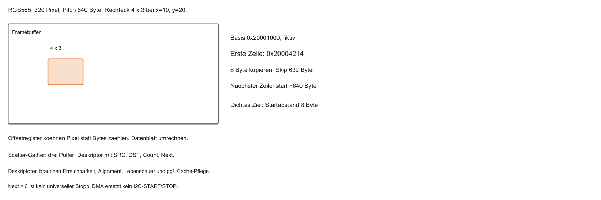
- High-End-SoCs: 2D-DMA / Grafik-Accelerator (z. B. Chrom-ART)
- Versteht Rechtecke (\(X\)/\(Y\)), nicht nur lineare Bytes
- Zeilenoffsets am Ende jeder Zeile — Ausschnitte aus Framebuffer-Layouts
Scatter-Gather (verkettete Listen)
- Viele kleine Puffer im RAM verstreut
- Neu-Konfigurieren nach jedem Puffer kostet CPU/IRQs
- Scatter-Gather: Deskriptor-Liste (SRC, DST, COUNT, Next) im RAM
- DMA lädt den nächsten Auftrag selbst nach
Grenzen von DMA
- Verschiebt Bytes — keine allgemeine Logik
- Kein
ifauf Nutzdaten, keine Berechnung pro Byte - Kein Protokollverständnis (z. B. I2C-ACK): nur Reaktion auf DREQ/Handshake
- Für Entscheidungen bleibt die CPU zuständig
Aufgabe — CS und Audiofenster
Darf CS bei DMA-TC bereits HIGH werden? Was folgt aus 30 ms Nachfüllzeit im Audio-Beispiel?
Ausblick Labor: DMA in Renode
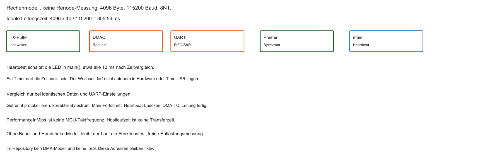
Geplantes Szenario (Details im Übungsblatt):
- Langer String (z. B. HTML-Header) über UART
- Runde 1: Polling — CPU blockiert sichtbar
- Runde 2: DMA-Kanal — CPU rechnet/blinkt weiter, Text läuft im Hintergrund
Messung 1: Polling (blockierend)
- LED als Heartbeat der
main-Schleife - Klassische UART-Sendeschleife:
Erwartung: Timer-/LED-Beweis
- Während langer Polling-Ausgabe: Text im UART-Monitor
- LED steht (nahezu) still — Heartbeat pausiert
- Interpretation: Polling blockiert Multitasking in der Hauptschleife
Messung 2: Umstieg auf DMA
- Polling-Schleife ersetzen durch MMIO-Konfiguration des DMAC
- Generisches Rezept in vier Schritten (herstellerübergreifend)
Schritt 1: UART für DMA scharfschalten
- Standard: UART erwartet CPU-Writes
- Enable-Bit für DMA-Request (DREQ), wenn TX-Register Platz hat
Schritt 2: Kanal konfigurieren
- SRC = String im SRAM, DST = UART-TX-Register (fest)
- COUNT = Länge; Memory-Increment an, Peripherie-Increment aus
Schritt 3: Interrupts aktivieren
- Transfer-Complete-Enable im DMA
- PLIC (bzw. Interrupt-Controller) für den Kanal freischalten
Schritt 4: Enable (Startschuss)
- ENABLE-Bit setzen → Transfer startet hardwareseitig
- C-Funktion kehrt sofort zurück — CPU ist frei
Erwartung mit DMA
- Text erscheint weiter im Monitor
- Der Heartbeat kommt aus
main(), nicht aus einer Timer-ISR und nicht aus Hardware-PWM - Die LED kann weiterlaufen und trotzdem Busstalls haben. Das ist kein Beweis für null Last
- DMA-TC heißt: letztes Element übergeben. FIFO und Schieberegister können noch senden
Interrupt-Handling am Ende
COUNT = 0→ Transfer Complete- In der ISR Status quittieren (Flag clear), sonst erneutes Feuern
Zusammenfassung Block 6
- Polling blockiert; Interrupt-Stürme kosten Overhead
- DMA: spezialisierter Coprozessor für Speichertransfers
- DMAC als Bus-Master, Cycle Stealing mit dem Arbiter
- Kanal: SRC, DST, COUNT, Breite, Increment
- Cache: Richtung, Besitz und Plattformsequenz. PMP ist kein Cache-Schalter
- Circular Mode, HT/TC → Ringpuffer und Ping-Pong
Ausblick und Abschluss
- Übungsblatt: Polling vs. DMA in Renode nachvollziehen
- Nächster Block: moderne CPU-Beschleunigung (u. a. Out-of-Order)
Vielen Dank — viel Erfolg im Labor.